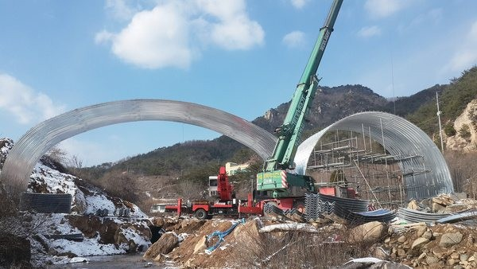
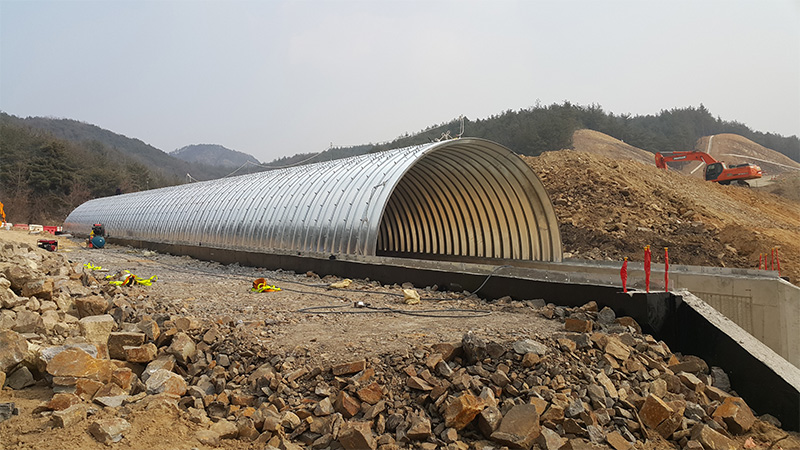

01 / STRUCTURE
與地盤共同承載
利用鋼材與周圍土壤的互制作用。

波形鋼板為鋼板壓製成形的結構材料，透過與周圍土壤互制承受埋設結構的載重。
利用鋼材與周圍土壤的互制作用。

可依現場幾何與用途，採用拱形、圓形等多種結構。

應用於涵洞、生態廊道、橋梁、礦業及防護結構等。
從補修補強、通水路涵洞，到礦業、彈藥庫、生態廊道及橋梁，於同一頁依用途瀏覽實際照片。
於老舊通道、涵洞及小型橋梁內組裝波形鋼板襯板進行補強，並整體檢討既有狀況、剩餘通水斷面、填充灌漿與施工順序。


道路橫越排水及河川水路連接案例，可查看拱形、基礎、進出水口與回填施工。





從礦場波形鋼板結構全景，到拱體吊裝、現場組裝與回填。
GS 詢價案件・Newman，西澳


展示覆土式彈藥庫的拱形組裝、覆土後外觀及內部空間；設施資訊去識別化，應用依該設施設計與規範。


生態廊道及生態隧道實際案例，呈現周邊地形、道路與通道的連接。


小型橋梁及道路下方通過結構案例，呈現配合現場的形狀與組裝。


確認幾何與設計條件後，串聯結構檢核、圖面及施工支援。
依既有 REXSTEEL 產品介紹所列基本規格；適用規格及供應範圍須依專案條件確認。
| 板厚 (t) | 波距 (p) | 波深 (d) |
|---|---|---|
| 3.4~9.0mm | 381mm | 140mm |
一併檢討地盤、載重、排水條件及施工順序。

確認用途、跨距與淨高、覆土、載重及地盤條件。

依設計製作鋼板，並檢討現場組裝與接合。

依施工計畫檢討回填、夯實及變形控制。
歡迎洽詢產品、設計及施工支援。